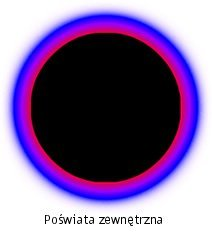
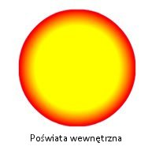

| Pakiet | flash.filters |
| Klasa | public final class GradientGlowFilter |
| Dziedziczenie | GradientGlowFilter |
| Wersja języka: | ActionScript 3.0 |
| Wersje środowiska wykonawczego: | AIR 1.0, Flash Player 9 |
Użycie filtra jest uzależnione od obiektu, dla którego filtr ma być stosowany:
- Aby zastosować filtry dla obiektów wyświetlanych, należy użyć właściwości
filters. Ustawienie właściwościfiltersobiektu nie powoduje modyfikacji obiektu, a filtr można usunąć, usuwając właściwośćfilters. - Aby stosować filtry do obiektów BitmapData, należy użyć metody
BitmapData.applyFilter(). Wywołanie metodyapplyFilter()dla obiektu BitmapData powoduje wygenerowanie obrazu filtrowanego ze źródłowego obiektu BitmapData za pomocą obiektu filtru.
Zastosowanie filtru do obiektu wyświetlanego powoduje, że dla właściwości cacheAsBitmap obiektu wyświetlanego zostaje ustawiona wartość true. Po usunięciu wszystkich filtrów zostaje przywrócona wartość oryginalna właściwości cacheAsBitmap.
Filtr obsługuje skalowanie stołu montażowego. Jednak nie obsługuje skalowania ogólnego, rotacji ani pochylenia; jeśli skalowany jest sam obiekt (dla wartości scaleX i scaleY ustawiana jest wartość inna niż 1,0), efekt filtra nie jest skalowany. Jest skalowany tylko wówczas, gdy użytkownik powiększy stół montażowy.
Filtr nie zostanie zastosowany, jeśli wynikowy obraz przekracza maksymalne wymiary. W środowisku AIR 1.5 oraz w programie Flash Player 10 maksymalna wartość szerokości lub wysokości to 8 191 pikseli, a całkowita liczba pikseli nie może przekraczać 16 777 215 pikseli. (Dlatego, jeśli obraz jest szeroki na 8 192 pikseli, może mieć jedynie 2 048 pikseli wysokości). W programie Flash Player 9 i wcześniejszych wersjach oraz w środowisku AIR 1.1 i wcześniejszych wersjach ograniczenie wysokości i szerokości wynosiło 2880 pikseli. Przykład: powiększenie dużego klipu filmowego, do którego zastosowano filtr, powoduje, że filtr zostaje wyłączony, gdy obraz wynikowy przekroczy maksymalne wymiary.
Powiązane elementy interfejsu API
flash.display.BitmapData.applyFilter()
flash.display.DisplayObject.cacheAsBitmap
flash.display.DisplayObject.filters
Klasa GlowFilter
 Ukryj dziedziczone właściwości publiczne
Ukryj dziedziczone właściwości publiczne Pokaż dziedziczone właściwości publiczne
Pokaż dziedziczone właściwości publiczne| Właściwość | Zdefiniowane przez | ||
|---|---|---|---|
| alphas : Array
Tablica wartości przezroczystości alfa, które odpowiadają kolorom z tablicy kolorów. | GradientGlowFilter | ||
| angle : Number
Kąt w stopniach. | GradientGlowFilter | ||
| blurX : Number
Intensywność rozmycia w poziomie. | GradientGlowFilter | ||
| blurY : Number
Intensywność rozmycia w pionie. | GradientGlowFilter | ||
| colors : Array
Tablica kolorów definiująca gradient. | GradientGlowFilter | ||
 | constructor : Object
Odwołanie do obiektu klasy lub funkcji konstruktora, dotyczące danej instancji obiektu. | Object | |
| distance : Number
Przesunięcie blasku. | GradientGlowFilter | ||
| knockout : Boolean
Określa, czy z tym obiektem skojarzono ramkę odcięcia. | GradientGlowFilter | ||
| quality : int
Liczba operacji zastosowania filtra. | GradientGlowFilter | ||
| ratios : Array
Tablica współczynników rozkładu kolorów, które odpowiadają kolorom z tablicy kolorów. | GradientGlowFilter | ||
| strength : Number
Siła odciskania lub zalewkowania. | GradientGlowFilter | ||
| type : String
Umiejscowienie efektu filtra. | GradientGlowFilter | ||
| Metoda | Zdefiniowane przez | ||
|---|---|---|---|
GradientGlowFilter(distance:Number = 4.0, angle:Number = 45, colors:Array = null, alphas:Array = null, ratios:Array = null, blurX:Number = 4.0, blurY:Number = 4.0, strength:Number = 1, quality:int = 1, type:String = "inner", knockout:Boolean = false)
Inicjuje filtr z zadanymi parametrami. | GradientGlowFilter | ||
[przesłanianie]
Zwraca kopię tego obiektu typu Filter. | GradientGlowFilter | ||
|
Wskazuje, czy dla obiektu zdefiniowano określoną właściwość. | Object | |
|
Wskazuje, czy instancja klasy Object należy do łańcucha prototypów obiektu określonego jako parametr. | Object | |
|
Wskazuje, czy określona właściwość istnieje i jest przeliczalna. | Object | |
|
Ustawia dostępność właściwości dynamicznej używanej w pętlach. | Object | |
|
Zwraca ciąg reprezentujący obiekt — sformatowany zgodnie z konwencjami właściwymi dla ustawień regionalnych. | Object | |
|
Zwraca ciąg reprezentujący określony obiekt. | Object | |
|
Zwraca pierwotną wartość dla określonego obiektu. | Object | |
alphas | właściwość |
alphas:Array| Wersja języka: | ActionScript 3.0 |
| Wersje środowiska wykonawczego: | AIR 1.0, Flash Player 9 |
Tablica wartości przezroczystości alpha, które odpowiadają kolorom z tablicy colors. Poprawne wartości dla każdego elementu tablicy należą do zakresu od 0 do 1. Przykład: wartość 0,25 powoduje ustawienie wartości przezroczystości alpha równej 25%.
Właściwość alphas nie może być zmieniana poprzez bezpośrednie modyfikowanie jej wartości. Zamiast tego należy uzyskać odwołanie do właściwości alphas, zmienić odwołanie, a następnie ustawić właściwość alphas na wartość odwołania.
Właściwości colors, alphas i ratios są ze sobą powiązane. Pierwszy element tablicy colors odpowiada pierwszemu elementowi w tablicy alphas oraz w tablicy ratios, itd.
Implementacja
public function get alphas():Array public function set alphas(value:Array):voidZgłasza
TypeError — Podczas ustawiania tablica ma wartość null
|
Powiązane elementy interfejsu API
angle | właściwość |
angle:Number| Wersja języka: | ActionScript 3.0 |
| Wersje środowiska wykonawczego: | AIR 1.0, Flash Player 9 |
Kąt w stopniach. Poprawne wartości należą do zakresu od 0 do 360. Wartością domyślną jest 45.
Wartość kąta reprezentuje kąt padania światła z teoretycznego źródła światła oświetlającego obiekt oraz określa położenie efektu względem obiektu. Jeśli dla właściwości distance zostanie ustawiona wartość 0, efekt nie zostanie przesunięty z obiektu i dlatego właściwość angle nie będzie miała żadnego efektu.
Implementacja
public function get angle():Number public function set angle(value:Number):voidblurX | właściwość |
blurX:Number| Wersja języka: | ActionScript 3.0 |
| Wersje środowiska wykonawczego: | AIR 1.0, Flash Player 9 |
Intensywność rozmycia w poziomie. Poprawne wartości należą do zakresu od 0 do 255. Rozmycie równe 1 oznacza, że obraz oryginalny jest kopiowany w stanie oryginalnym. Wartością domyślną jest 4. Wartości, które są potęgami 2 (dwójki 2, 4, 8, 16 i 32) są zoptymalizowane i są renderowane szybciej niż inne wartości.
Implementacja
public function get blurX():Number public function set blurX(value:Number):voidblurY | właściwość |
blurY:Number| Wersja języka: | ActionScript 3.0 |
| Wersje środowiska wykonawczego: | AIR 1.0, Flash Player 9 |
Intensywność rozmycia w pionie. Poprawne wartości należą do zakresu od 0 do 255. Rozmycie równe 1 oznacza, że obraz oryginalny jest kopiowany w stanie oryginalnym. Wartością domyślną jest 4. Wartości, które są potęgami 2 (dwójki 2, 4, 8, 16 i 32) są zoptymalizowane i są renderowane szybciej niż inne wartości.
Implementacja
public function get blurY():Number public function set blurY(value:Number):voidcolors | właściwość |
colors:Array| Wersja języka: | ActionScript 3.0 |
| Wersje środowiska wykonawczego: | AIR 1.0, Flash Player 9 |
Tablica kolorów definiująca gradient. Na przykład: czerwony ma wartość 0xFF0000, niebieski 0x0000FF itd.
Właściwość colors nie może być zmieniana poprzez bezpośrednie modyfikowanie jej wartości. Zamiast tego należy uzyskać odwołanie do właściwości colors, zmienić odwołanie, a następnie ustawić właściwość colors na wartość odwołania.
Właściwości colors, alphas i ratios są ze sobą powiązane. Pierwszy element tablicy colors odpowiada pierwszemu elementowi w tablicy alphas oraz w tablicy ratios, itd.
Implementacja
public function get colors():Array public function set colors(value:Array):voidZgłasza
TypeError — Podczas ustawiania tablica ma wartość null.
|
Powiązane elementy interfejsu API
distance | właściwość |
knockout | właściwość |
knockout:Boolean| Wersja języka: | ActionScript 3.0 |
| Wersje środowiska wykonawczego: | AIR 1.0, Flash Player 9 |
Określa, czy z tym obiektem skojarzono ramkę odcięcia. Efekt odcięcia sprawia, że wypełnienie obiektu jest przezroczyste i ujawnia kolor tła dokumentu. Wartość true określa efekt odcięcia; wartością domyślną jest false (brak efektu odcięcia).
Implementacja
public function get knockout():Boolean public function set knockout(value:Boolean):voidquality | właściwość |
quality:int| Wersja języka: | ActionScript 3.0 |
| Wersje środowiska wykonawczego: | AIR 1.0, Flash Player 9 |
Liczba operacji zastosowania filtra. Wartością domyślną jest BitmapFilterQuality.LOW, która jest równoważna jednorazowemu zastosowaniu filtra. Wartość BitmapFilterQuality.MEDIUM powoduje dwukrotne zastosowanie filtra; wartość BitmapFilterQuality.HIGH powoduje trzykrotne zastosowanie filtra. Filtry o niższych wartościach są renderowane szybciej.
W większości zastosowań wystarczające są następujące wartości quality: low, medium i high. Mimo że w celu osiągnięcia różnych efektów można stosować dodatkowe wartości liczbowe (aż do 15), wyższe wartości są renderowane wolniej. Zamiast zwiększać wartość quality — w celu uzyskania podobnego efektu przy krótszym czasie renderowania — można po prostu zwiększać wartości właściwości blurX i blurY.
Implementacja
public function get quality():int public function set quality(value:int):voidPowiązane elementy interfejsu API
ratios | właściwość |
ratios:Array| Wersja języka: | ActionScript 3.0 |
| Wersje środowiska wykonawczego: | AIR 1.0, Flash Player 9 |
Tablica współczynników rozkładu kolorów, które odpowiadają kolorom z tablicy colors. Poprawne wartości należą do zakresu od 0 do 255.
Właściwość ratios nie może być zmieniana poprzez bezpośrednie modyfikowanie jej wartości. Zamiast tego należy uzyskać odwołanie do właściwości ratios, zmienić odwołanie, a następnie ustawić właściwość ratios na wartość odwołania.
Właściwości colors, alphas i ratios są ze sobą powiązane. Pierwszy element tablicy colors odpowiada pierwszemu elementowi w tablicy alphas oraz w tablicy ratios, itd.
Filtr poświaty gradientowej należy traktować jako poświatę, która wydobywa się z wnętrza obiektu (jeśli dla wartości distance ustawiono 0), z gradientami w postaci pasków, które się przenikają. Pierwszy kolor w tablicy colors jest najbardziej zewnętrznym kolorem poświaty. Kolor ostatni jest najbardziej wewnętrznym kolorem poświaty.
Każda wartość w tablicy ratios ustawia położenie koloru na promieniu gradientu. Wartość 0 odpowiada najbardziej zewnętrznemu punktowi gradientu, a wartość 255 odpowiada najbardziej wewnętrznemu punktowi gradientu. Wartości współczynników mogą należeć do zakresu od 0 do 255 pikseli — są to wartości wzrastające; na przykład: [0, 64, 128, 200, 255]. Wartości od 0 do 128 pojawiają się na zewnętrznych krawędziach poświaty. Wartości od 129 do 255 pojawiają się w wewnętrznym obszarze poświaty. Kolory filtru — w zależności od wartości współczynników kolorów i wartości type filtru — mogą być zasłonięte przez obiekt, do którego filtr został zastosowany.
W poniższym kodzie i obrazie filtr został zastosowany do klipu filmowego przedstawiającego czarne koło, a dla filtru ustawiono typ „full”. W celu przedstawienia pełnego efektu ustawiono dla pierwszego koloru w tablicy colors (różowego) wartość alpha równą 1, dzięki czemu jest on widoczny na białym tle dokumentu. (W praktyce możliwe jest, że użytkownik nie chciałby, aby pierwszy kolor wyglądał w ten sposób). Ostatni kolor w tablicy, żółty, zasłania czarne koło, do którego filtr został zastosowany:
var colors:Array = [0xFFCCFF, 0x0000FF, 0x9900FF, 0xFF0000, 0xFFFF00]; var alphas:Array = [1, 1, 1, 1, 1]; var ratios:Array = [0, 32, 64, 128, 225]; var myGGF:GradientGlowFilter = new GradientGlowFilter(0, 0, colors, alphas, ratios, 50, 50, 1, 2, "full", false);

Aby uzyskać efekt gładkiego przejścia po ustawieniu typu type na wartość„outer” lub „full”, należy ustawić pierwszy kolor w tablicy na taki sam kolor, co kolor tła dokumentu, lub należy ustawić wartość alpha pierwszego koloru na 0 — każda z tych technik sprawi, że efekt filtru na krawędzi zostanie wymieszany z kolorem tła.
Po wprowadzeniu dwóch niewielkich zmian w kodzie efekt poświaty może być bardzo różny, nawet w przypadku takich samych tablic ratios i colors. Ustawienie 0 dla wartości alpha pierwszego koloru w tablicy sprawi, że efekt filtru zostanie zmieszany z białym tłem dokumentu; dla właściwości type należy również ustawić wartość „outer” lub „inner”. Wyniki przedstawiają poniższe obrazy.
 
Należy pamiętać, że zakres kolorów w gradiencie jest uzależniony od wartości właściwości blurX, blurY, strength i quality, a także wartości ratios.
Implementacja
public function get ratios():Array public function set ratios(value:Array):voidZgłasza
TypeError — Podczas ustawiania tablica ma wartość null.
|
Powiązane elementy interfejsu API
strength | właściwość |
strength:Number| Wersja języka: | ActionScript 3.0 |
| Wersje środowiska wykonawczego: | AIR 1.0, Flash Player 9 |
Siła odciskania lub zalewkowania. Im wyższa jest wartość, tym więcej koloru zostaje odciśnięte, co powoduje również wzmocnienie kontrastu między poświatą i tłem. Poprawne wartości należą do zakresu od 0 do 255. Wartość 0 oznacza, że filtr nie jest stosowany. Wartością domyślną jest 1.
Implementacja
public function get strength():Number public function set strength(value:Number):voidtype | właściwość |
type:String| Wersja języka: | ActionScript 3.0 |
| Wersje środowiska wykonawczego: | AIR 1.0, Flash Player 9 |
Umiejscowienie efektu filtra. Możliwe wartości to stałe flash.filters.BitmapFilterType:
BitmapFilterType.OUTER— poświata na zewnętrznej krawędzi obiektuBitmapFilterType.INNER— faza na zewnętrznej krawędzi obiektu, domyślna.BitmapFilterType.FULL— poświata na górnej stronie obiektu
Implementacja
public function get type():String public function set type(value:String):voidZgłasza
TypeError — Podczas ustawiania ciąg znaków ma wartość null
|
GradientGlowFilter | () | Konstruktor |
public function GradientGlowFilter(distance:Number = 4.0, angle:Number = 45, colors:Array = null, alphas:Array = null, ratios:Array = null, blurX:Number = 4.0, blurY:Number = 4.0, strength:Number = 1, quality:int = 1, type:String = "inner", knockout:Boolean = false)| Wersja języka: | ActionScript 3.0 |
| Wersje środowiska wykonawczego: | AIR 1.0, Flash Player 9 |
Inicjuje filtr z zadanymi parametrami.
Parametrydistance:Number (default = 4.0) | |
angle:Number (default = 45) | |
colors:Array (default = null) | |
alphas:Array (default = null)colors. Poprawne wartości dla każdego elementu tablicy należą do zakresu od 0 do 1. Przykład: wartość 0,25 powoduje ustawienie wartości przezroczystości alpha równej 25%.
| |
ratios:Array (default = null) | |
blurX:Number (default = 4.0) | |
blurY:Number (default = 4.0) | |
strength:Number (default = 1) | |
quality:int (default = 1)
Więcej informacji zawiera opis właściwości | |
type:String (default = "inner")
| |
knockout:Boolean (default = false)true określa efekt odcięcia; wartością domyślną jest false (brak efektu odcięcia).
|
clone | () | metoda |
override public function clone():BitmapFilter| Wersja języka: | ActionScript 3.0 |
| Wersje środowiska wykonawczego: | AIR 1.0, Flash Player 9 |
Zwraca kopię tego obiektu typu Filter.
ZwracaBitmapFilter — Nowa instancja GradientGlowFilter z wszystkimi właściwościami oryginalnej instancji GradientGlowFilter.
|
- Zaimportuj wymagane klasy.
- Zadeklaruj zmienne globalne w celu zdefiniowania kwadratu i filtru.
- Utwórz funkcję konstruktora, którego działanie jest następujące:
- Wywołuje metodę
draw(), która korzysta z klasy Graphics, do której uzyskuje dostęp za pośrednictwem właświwościgraphicsSprite, w celu narysowania kwadratu. - Tworzy obiekt BitmapFilter o nazwie
filteri przypisuje do niego wartość zwracaną przez wywołanie metodygetBitmapFilter(), która tworzy filtr. - Tworzy nową tablicę o nazwie
myFiltersi dodaje do niej obiektfilter. - Przypisuje tablicę
myFiltersdo właściwościfiltersobiektu GradientGlowFilterExample. To spowoduje zastosowanie wszystkich filtrów zalezionych w obiekciemyFilters— w tym przykładzie jest to filtrfilter.
- Wywołuje metodę
package {
import flash.filters.BitmapFilter;
import flash.filters.BitmapFilterQuality;
import flash.filters.BitmapFilterType;
import flash.filters.GradientGlowFilter;
import flash.display.Sprite;
public class GradientGlowFilterExample extends Sprite {
private var bgColor:uint = 0xCCCCCC;
private var size:uint = 80;
private var offset:uint = 50;
private var distance:Number = 0;
private var angleInDegrees:Number = 45;
private var colors:Array = [0xFFFFFF, 0xFF0000, 0xFFFF00, 0x00CCFF];
private var alphas:Array = [0, 1, 1, 1];
private var ratios:Array = [0, 63, 126, 255];
private var blurX:Number = 50;
private var blurY:Number = 50;
private var strength:Number = 2.5;
private var quality:Number = BitmapFilterQuality.HIGH;
private var type:String = BitmapFilterType.OUTER;
private var knockout:Boolean = false;
public function GradientGlowFilterExample() {
draw();
var filter:BitmapFilter = getBitmapFilter();
var myFilters:Array = new Array();
myFilters.push(filter);
filters = myFilters;
}
private function getBitmapFilter():BitmapFilter {
return new GradientGlowFilter(distance,
angleInDegrees,
colors,
alphas,
ratios,
blurX,
blurY,
strength,
quality,
type,
knockout);
}
private function draw():void {
graphics.beginFill(bgColor);
graphics.drawRect(offset, offset, size, size);
graphics.endFill();
}
}
}
Tue Jun 12 2018, 12:06 PM Z